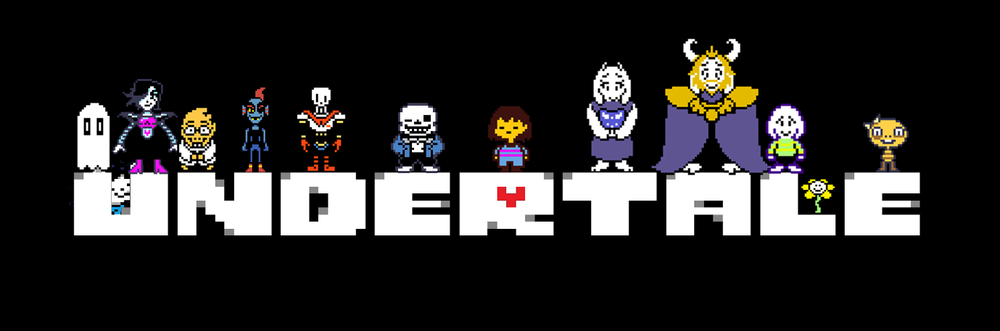

undertale latar belakang Undertale merupakan game bergenre RPG untuk platform PC, Mac, Linux, PS4 dan vita. Untuk sebuah PC game, Undertale mengusung grafis minimalis yaitu 8-bit graphic style kasar tanpa shading namun tetap memiliki kualitas animasi dan desain karakter yang sangat baik. Disamping itu undertale memiliki gameplay, storyline dan soundtrack yang sangat solid yang membuat sulit bagi siapapun untuk melupakan atau melewatkan game ini. Walaupun merupakan indie game dan memiliki grafis yang minimalis, undertale terbukti mendapat banyak respon postif serta mampu bersaing dengan game kelas atas seperti the witcher 3, metal gear solid 5, dan fallout 4 yang juga muncul pada tahun rilisnya yaitu tahun 2015. Keunikan, khas dan penggambaran dari game undertale juga dapat dirasakan ketika kita melihat situsnya yaitu undertale.com/about. review Undertale dirilis untuk windows dan Mac OS X pada 15 September 2015 dan Linux pada 17 Juli 2016. Saat itu undertale mendapatkan banyak sekali review positif dan memiliki banyak penggemar. Pada 15 Agustus 2017 undertale juga dirilis untuk PS4 dan PS vita. Undertale dibuat menggunakan Game Maker: Studio engine oleh Toby Fox sebagai main developer sekaligus composer dan dibantu oleh Temmie Chang sebagai main artist. Keseluruhan 101 sountrack yang merupakan salah satu elemen terbaik dari undertale dibuat oleh Toby menggunakan FL studio. Gameplay dari undertale adalah seperti RPG pada umumnya yaitu musuh yang tiba-tiba muncul seketika ketika kita sedang berjalan serta grinding level untuk menaikkan level dan mendapat gold. Namun istilah "pada umumnya" sepertinya sangat tidak cocok untuk game ini karena pada bagian battle undertale memiliki pilihan bertarung yang unik selain melawan(fight) yaitu act(tindakan) dan juga mercy(mengampuni). Jadi sangatlah mungkin untuk menyelesaikan game ini dengan tanpa membunuh satupun monster yang kita hadapi. Gameplay pada bagian battle di undertale adalah turn based attack dan ketika kita diserang kita harus menghindari serangan dari musuh dengan menggerakkan red heart yang merupakan soul dari karakter kita. Setiap monster memiliki pilihan yang unik pada act dimana kita dapat seperti berinteraksi dengan tiap monster dan juga battle style yang tentunya berbeda-beda dan terus berkembang seiring berjalannya game ini. game ini juga juga sesekali memiliki konsep breaking the fourth wall dimana membunuh(fight), mengampuni(mercy), ataupun berinteraksi(act) akan menghasilkan perubahan dialog penting, memanipulasi fitur save bahkan mereset game. Keseluruhan karakter yang ada dalam undertale juga sangatlah solid dan tidaklah ada karakter yang asal dalam pembuatannya. Mulai dari karakter utama yang beberapa juga merupakan boss dari bagian game ini, miniboss, npc, hingga vendor(shopkeeper) seluruhnya memiliki ciri khas, karakter yang kuat, bahkan hampir pada setiap karakter disuguhkan backsound yang sangat menarik. Karakter yang kuat pada game ini dapat ditunjukkan dari percakapan pada tiap karakter, peran karakter pada game, serta jokes yang sangat menarik contohnya adalah karakter papyrus yang berbicara dengan menggunakan font papyrus dan saudaranya sans dengan comic sans. Hampir pada setiap karakter utama memiliki pengetahuan meta (meta-knowlegde), yaitu mengingat tindakan yang telah dilakukan pemain dalam ronde terakhir. Original soundtrack dan backsound pada game ini juga tidak dapat dianggap remeh dan merupakan salah satu aspek terkuat dari game ini. komposisi dan transisi sound pada game ini sangatlah pas dan dapat dirasakan ketika battle yang membuat pertarungan menjadi sangat intens bahkan sampai dialog dengan karakter penempatan sound sangatlah tepat. Sound pada game ini dibuat menggunakan FL studio dengan 8-bit style sound namun tetap sangat awesome untuk didengar. **many spoiler ahead** Mengulas story pada game undertale sangatlah rentan terhadap spoiler dan mempengaruhi game experience terutama seseorang yang baru ingin memainkannya karena terdapat banyak rahasia terutama pada storyline. Bagi pembaca yang tertarik ingin memainkan game ini lebih baik berhenti untuk membaca review ini agar memaksimalkan game experience ketika memainkan game ini. Game ini diawali dengan prolog yang menceritakan tentang perselisihan antara manusia dan monster yang akhirnya dimenangkan oleh manusia. Para monster kemudian disegel dibawah tanah. Bertahun-tahun kemudian seorang anak manusia mendaki sebuah gunung dan menemukan sebuah lubang yang sangat besar dan tidak sengaja terjatuh kedalamnya dan akhirnya story dari game ini pun dimulai. Setelah tersadar, kita pun akan disambut oleh Flowey yang menjelaskan gameplay dari game ini. Namun Flowey ternyata punya niat lain dibelakang itu semua. Namun rencana tersebut digagalkan oleh Toriel, monster yang bersifat keibuan (motherly monster). Ending dari undertale sebenarnya ada 3 yaitu normal, pacifist, dan genocide route. Normal ending akan didapat ketika kita membunuh dan juga tidak membunuh monster(mercy) terutama untuk boss dan berakhir dengan melawan flowey sebagai final boss. Pacifist ending akan didapat jika kita tidak membunuh sama sekali monster. Pada final boss pacifist, kita akan melawan flowey yang nantinya akan menyerap jiwa semua karakter dan berubah menjadi Asriel Dreemurr (Asriel tidak akan muncul pada neutral route). Asriel sebetulnya adalah anak dari Asgore dan juga Toriel dan banyak yang mengatakan Asriel Dreemurr sebetulnya adalah anagram dari serial murder. Pada ending pacifist akan ada epilog dimana kita akan bertemu seluruh karakter dan berakhir dengan good ending dimana semua tidak ada yang mati. Terakhir adalah genocide route yang didapat jika player membunuh seluruh monster termasuk boss. Pada genocide route kita akan menghadapi final boss yang sangat tidak disangka-sangka yaitu sans, karakter yang selalu menemani dan membantu kita. Sans merupakan lawan yang paling sulit pada game ini. kesimpulan walaupun merupakan game indie dan tidak menyajikan grafis yang amazing seperti kebanyakan game pada masanya, kekuatan pada karakter, dialog, storyline dan juga sountrack yang awesome membuat game ini dapat bersaing dengan game besar yang rilis pada tahunnya dan juga mendapat banyak reaksi maupun rating yang positif terhadap game ini. Undertale sebetulnya mengajarkan kita tentang determination(keteguhan hati) dimana kata tersebut akan sering muncul pada game ini dan sangat memberi arti pada game ini. Selain itu, walaupun memiliki konsep menghadapi monster, undertale mengajarkan bahwa monster juga merupakan makhluk dan juga memiliki perasaan yang selanjutnya membawa kita pada good ending(pacifist route). Sebetulnya akan terasa sulit bagi kita untuk membunuh karakter dari game ini karena kita akan banyak dibawa pada heartwarming moment maupun funny moment dengan karakter pada game ini dan kita akan merasa kesepian ataupun bersalah ketika membunuh karakter di game ini dan mengakhiri kita dengan melawan sans pada genocide route. Untuk mendapat ending dan game experience terbaik pada game ini sangatlah disarankan melewati pacifist ataupun genocide route. Selain semua hal yang telah disebutkan, undertale masih menyimpan banyak secret yang hanya akan dapat dirasakan ketika kita memainkan game ini. so how you want to play this game? save them all or you feel like you're going to have a bad time